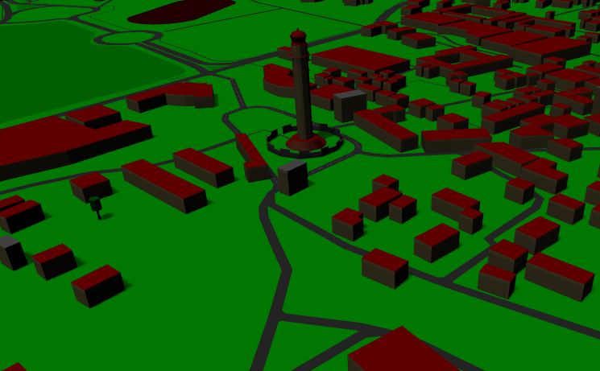
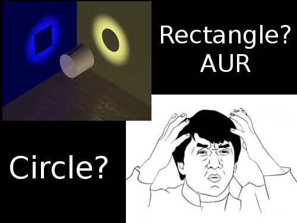
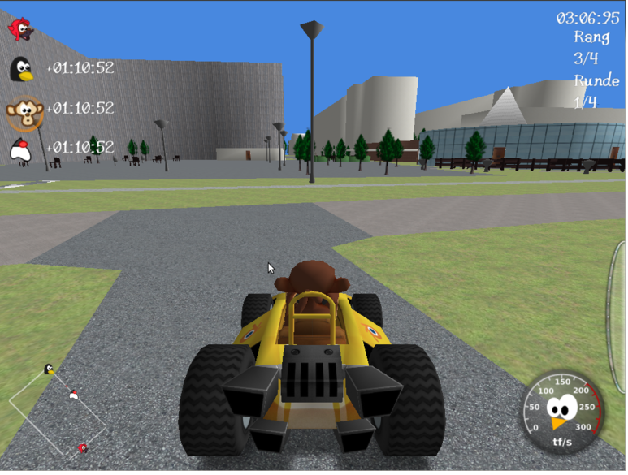
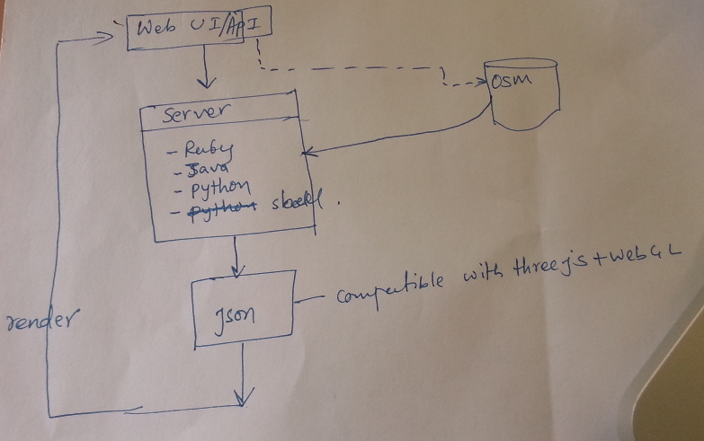
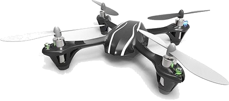

osm2threejs
API for 3D maps

2D

Problem! Einstein ¿
Problems!
- Maps are hard to read
- creating/modelling 3D is hard
Where?
- flight simulation
- military application
- disaster effect simulation
- urban planning
Gaming

tourism, game-map, gps
Technologies/Architecture

How?
- deal with raw geo-data (source: osm)
- webgl abstraction
- easy to use api for visualization
Further Extensions
- GPS integration
- texture integration
- mode features
- interior exploration
- flight simulation
Queries?

Team:
Milan Thapa
Rohit Man Amatya
Rupak Raj Ghimire
Shalil Awaley
Ujwal Devkota